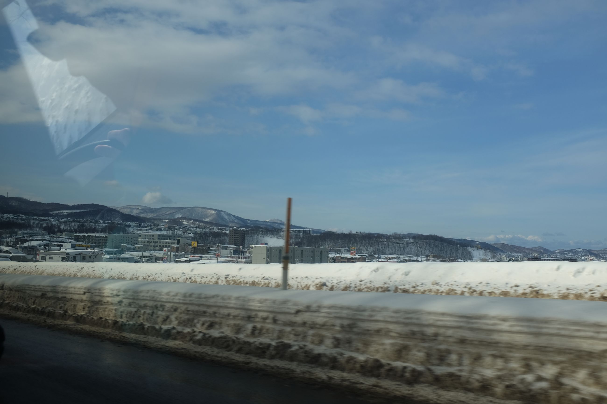
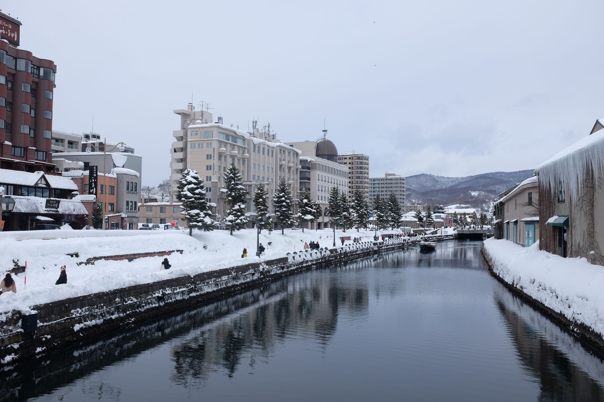
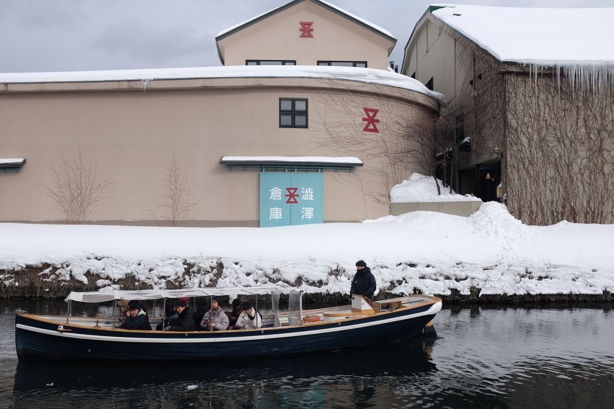
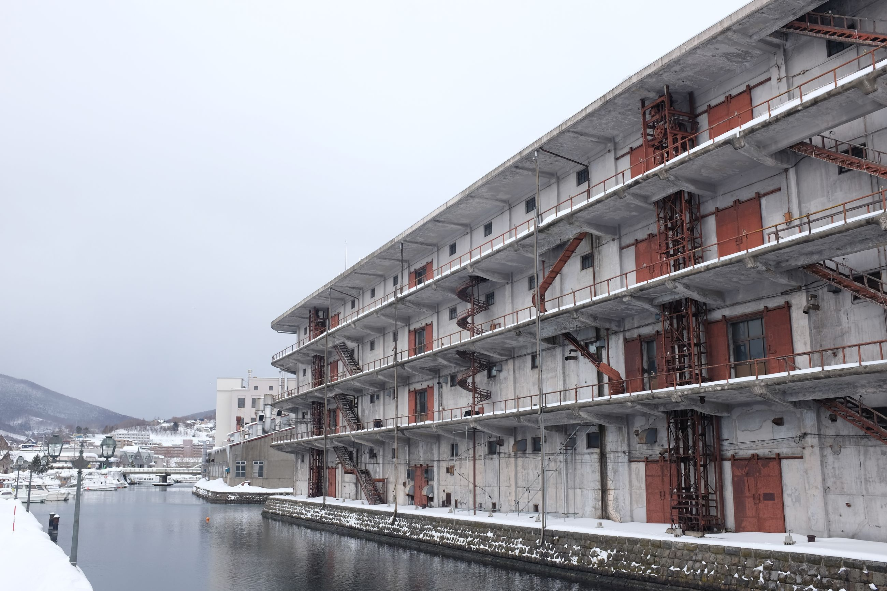
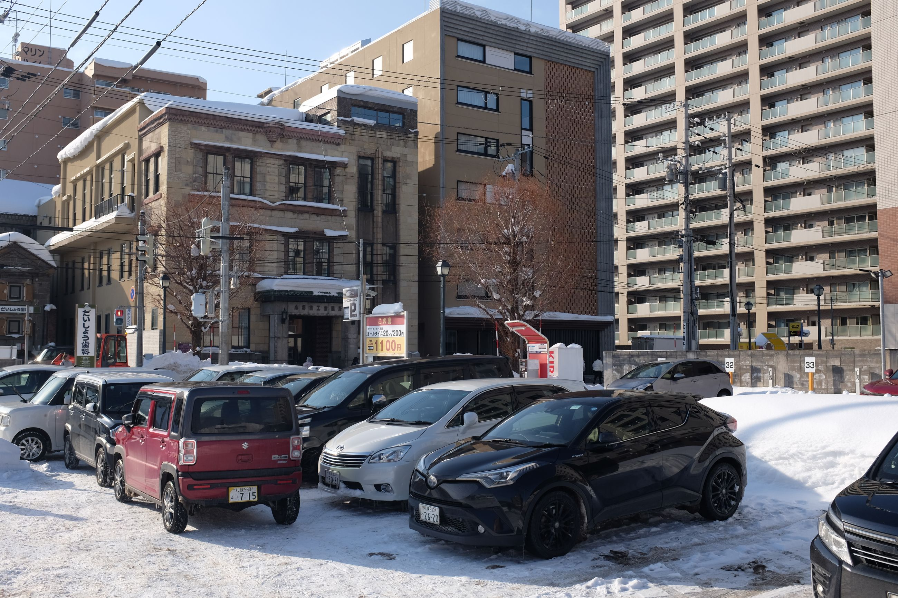
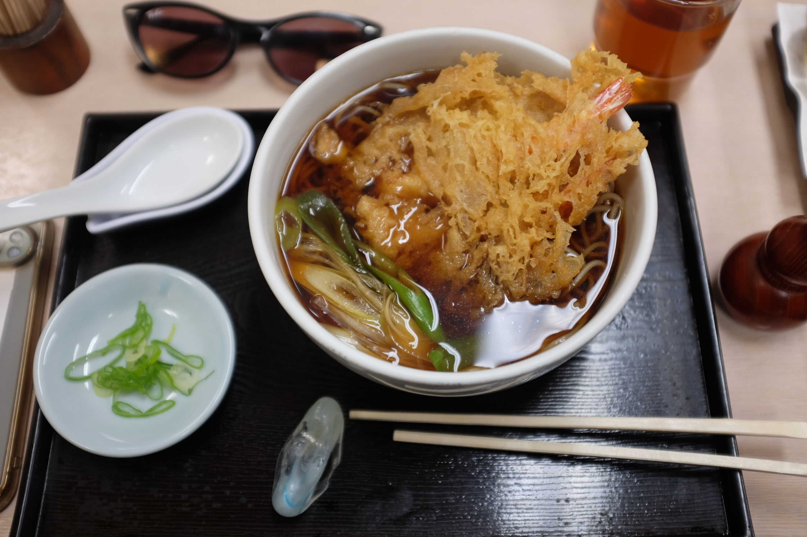

One of those small industrial towns that happen to have a lot of ski resorts nearby.

There aren't many pictures since it was snowing a lot of the time, and we were out skiing for the other half. But overall a cute little town with a nice canal. The architecture is a strange mix of Russian Orthodox style castles and functional square buildings.
  
The museums were a random, small-town assortment. My favourite kind: a small collection of things that didn't belong anywhere else. The Otaru Museum had a bit on history and natural history. Think Ainu culture in one exhibit hall, and an entomologist's collection in the other. And then the Yusen museum was some shipping/postal museum which was more historical for the building than anything. My favourite was the ukiyo-e museum with special exhibit from Utagawa Hiroshige's work around "four seasons". Ukiyo-e was an pre-Meiji era art form that involved carving different layers of a painting onto wood blocks and having them pressed onto paper. Absolutely amazing technique and vivid colours.
An otherwise sleepy town.
 